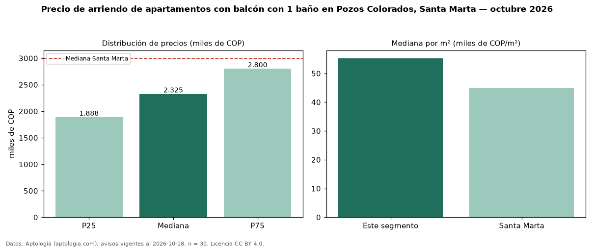

Precio de arriendo de apartamentos con balcón con 1 baño en Pozos Colorados, Santa Marta — octubre 2026
En Pozos Colorados, Santa Marta, la mediana de canon mensual de apartamentos con balcón con 1 baño es COP 2,33 millones, según 30 avisos vigentes. Eso es 27 % menos que la mediana de los apartamentos con balcón en arriendo de Pozos Colorados (COP 3,20 millones, n = 78); este segmento reúne el 38 % de esos avisos. Por metro cuadrado, la mediana es COP 55.263/m² al mes (n = 30), 6 % por encima de los apartamentos con balcón en arriendo de Pozos Colorados (COP 52.178/m²). El área mediana anunciada es 40 m². El segmento con más oferta es el de 1 habitación (28 avisos, mediana COP 2,33 millones). El estrato más frecuente es 6 (63 % de los avisos con estrato). La mediana de todos los apartamentos en arriendo de Santa Marta es COP 3,00 millones (−22 % de diferencia). La mitad central de los avisos va de COP 1,89 millones a COP 2,80 millones (razón 1,5), una dispersión moderada. Datos: Aptología (aptologia.com), CC BY 4.0 — https://www.aptologia.com/arriendo/santa-marta. Archivos: PDF, CSV con las cifras y gráfica PNG.

| Avisos únicos | 30 |
|---|---|
| Percentil 25 | COP 1.887.500 |
| Mediana | COP 2.325.000 |
| Percentil 75 | COP 2.800.000 |
| Mediana por m² | COP 55.263 |
Fuente: avisos vigentes de portales inmobiliarios recopilados por Aptología, deduplicados (mínimo 30 avisos únicos por celda). Precios pedidos, no cerrados. Fecha: 2026-10-18.